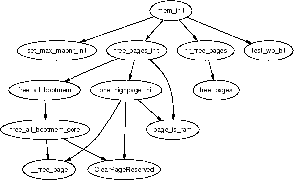
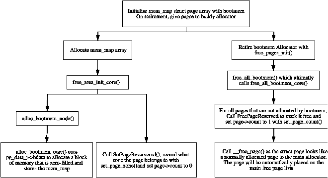

由于硬件配置组合实在太多，在编译期就静态初始化所有核心内核内存结构是不现实的。但即便要建立这些最基本的结构也需要内存——即便是下一章讨论的物理页分配器，要初始化自己也需要分配内存。那么物理页分配器又是如何为自己分配初始化所需的内存呢？
为解决这个问题，内核使用了一个专门的分配器：启动内存分配器（Boot Memory Allocator）。它基于最基本的分配器——首次适配（First Fit）分配器，用位图而非空闲块链表来表示内存 [Tan01]。位为 1 表示该页已分配，0 表示未分配。为了满足小于一页的分配请求，分配器会记录上一次分配的页帧号（Page Frame Number，PFN）以及该次分配结束的偏移量。后续的小分配会与上次"合并"，存放在同一页中。
读者也许会问：为什么不直接用这个分配器作为运行期的分配器？一个有力的理由是：尽管首次适配分配器不会因碎片问题而严重恶化 [JW98]，但它常常要线性扫描内存以满足分配请求。由于扫描的是位图，代价非常高；而且首次适配算法倾向于在物理内存起始处留下许多小空闲块，这些小块在大分配时仍会被扫描，使整个过程非常浪费 [WJNB95]。
| 函数 | 说明 |
|---|---|
| unsigned long init_bootmem(unsigned long start, unsigned long page) | 初始化 0 与 PFN page 之间的内存。可用内存的起始位于 PFN start。 |
| void reserve_bootmem(unsigned long addr, unsigned long size) | 把地址 addr 与 addr+size 之间的页标记为保留。对页的部分保留请求会导致整页被保留。 |
| void free_bootmem(unsigned long addr, unsigned long size) | 把地址 addr 与 addr+size 之间的页标记为空闲。 |
| void * alloc_bootmem(unsigned long size) | 从 ZONE_NORMAL 分配 size 字节。分配按 L1 硬件缓存对齐，以充分利用硬件缓存。 |
| void * alloc_bootmem_low(unsigned long size) | 从 ZONE_DMA 分配 size 字节，按 L1 硬件缓存对齐。 |
| void * alloc_bootmem_pages(unsigned long size) | 从 ZONE_NORMAL 分配 size 字节，按页大小对齐，使返回的是整页。 |
| void * alloc_bootmem_low_pages(unsigned long size) | 从 ZONE_NORMAL 分配 size 字节，按页大小对齐，使返回的是整页。 |
| unsigned long bootmem_bootmap_pages(unsigned long pages) | 计算用于存放表示 pages 个页面分配状态的位图所需的页数。 |
| unsigned long free_all_bootmem() | 在启动分配器寿终正寝时使用。它遍历位图中所有页面，对每个空闲页清除其标志位，并把页交给物理页分配器（见下一章），使运行期分配器能建立自己的空闲链表。 |
该分配器有两套非常相似但不同的 API：一套用于 UMA 架构，列于表 5.1；另一套用于 NUMA，列于表 5.2。主要区别在于 NUMA 版本必须提供操作所影响的节点；但因为这些 API 的调用者位于架构相关层，这一点不算大问题。
本章首先描述分配器用来表示各节点可用物理内存的结构，再说明如何探明物理内存的边界与各 zone 的大小，然后讨论这些信息如何用于初始化启动内存分配器结构。接着讨论分配与释放例程，最后讲启动内存分配器如何退役。
| 函数 | 说明 |
|---|---|
| unsigned long init_bootmem_node(pg_data_t *pgdat, unsigned long freepfn, unsigned long startpfn, unsigned long endpfn) | 用于 NUMA 架构。初始化 PFN startpfn 到 endpfn 之间的内存，第一个可用 PFN 为 freepfn。初始化完成后，节点 pgdat 被插入 pgdat_list。 |
| void reserve_bootmem_node(pg_data_t *pgdat, unsigned long physaddr, unsigned long size) | 把指定节点 pgdat 上地址 addr 与 addr+size 之间的页标记为保留。部分保留请求会导致整页被保留。 |
| void free_bootmem_node(pg_data_t *pgdat, unsigned long physaddr, unsigned long size) | 把指定节点 pgdat 上地址 addr 与 addr+size 之间的页标记为空闲。 |
| void * alloc_bootmem_node(pg_data_t *pgdat, unsigned long size) | 从指定节点 pgdat 的 ZONE_NORMAL 分配 size 字节，按 L1 硬件缓存对齐。 |
| void * alloc_bootmem_pages_node(pg_data_t *pgdat, unsigned long size) | 从指定节点 pgdat 的 ZONE_NORMAL 分配 size 字节，按页大小对齐，使返回的是整页。 |
| void * alloc_bootmem_low_pages_node(pg_data_t *pgdat, unsigned long size) | 从指定节点 pgdat 的 ZONE_NORMAL 分配 size 字节，按页大小对齐，使返回的是整页。 |
| unsigned long free_all_bootmem_node(pg_data_t *pgdat) | 在启动分配器寿终正寝时使用。遍历指定节点位图中所有页面，对每个空闲页清除其标志位，并把页交给物理页分配器（见下一章），使运行期分配器能建立自己的空闲链表。 |
系统中每个内存节点都对应一个 bootmem_data 结构。它包含启动内存分配器为该节点分配内存所需的信息，例如表示已分配页的位图以及该内存的位置。其在 <linux/bootmem.h> 中声明如下：
25 typedef struct bootmem_data {
26 unsigned long node_boot_start;
27 unsigned long node_low_pfn;
28 void *node_bootmem_map;
29 unsigned long last_offset;
30 unsigned long last_pos;
31 } bootmem_data_t;
各字段含义如下：
每个架构都必须提供 setup_arch() 函数，它的任务之一就是获取初始化启动内存分配器所需的参数。
各架构有各自的函数来取得所需参数。x86 上叫 setup_memory()（详见 2.2.2 节），MIPS、Sparc 上叫 bootmem_init()，PPC 上叫 do_init_bootmem()。无论架构如何，任务本质相同。它要计算的参数有：
一旦 setup_memory() 探明了可用物理内存的边界，就会选择两个启动内存初始化函数之一，并传入待初始化节点的起止 PFN。init_bootmem() 用于 UMA 架构，初始化 contig_page_data；init_bootmem_node() 用于 NUMA，初始化指定节点。两者都很简短，依赖 init_bootmem_core() 完成真正的工作。
该核心函数的第一项任务是把 pgdat_data_t 插入 pgdat_list——函数结束时该节点便准备就绪。接着，它在相关联的 bootmem_data_t 中记录此节点的起止地址，并分配表示页面分配状态的位图。位图的大小（按字节计，所以除以 8）按以下公式算出：
mapsize = ((end_pfn - start_pfn) + 7) / 8
位图存放在 bootmem_data_t→node_boot_start 指向的物理地址，其虚拟地址存入 bootmem_data_t→node_bootmem_map。由于没有架构无关的方法检测内存"空洞"，整张位图被初始化为 1，等于把所有页面都标记为已分配。然后由架构相关代码把可用页对应的位清零；但实际上只有 Sparc 架构利用了这一位图。在 x86 上，register_bootmem_low_pages() 函数遍历 e820 映射表，对每个可用页调用 free_bootmem() 把位清零，随后用 reserve_bootmem() 把位图自身所占页面保留下来。
reserve_bootmem() 可用于保留页供调用方使用，但用作一般分配并不方便。UMA 架构上提供了四个便于分配的函数：alloc_bootmem()、alloc_bootmem_low()、alloc_bootmem_pages() 和 alloc_bootmem_low_pages()，详见表 5.1。它们都用不同参数调用 __alloc_bootmem()。调用图见图 5.1。
NUMA 上也有类似函数，需额外传入节点参数，见表 5.2，分别为 alloc_bootmem_node()、alloc_bootmem_pages_node() 与 alloc_bootmem_low_pages_node()，都以不同参数调用 __alloc_bootmem_node()。
__alloc_bootmem() 与 __alloc_bootmem_node() 的参数基本相同：
所有分配 API 的核心函数是 __alloc_bootmem_core()。它较大，但步骤简单，可拆分讨论。它从 goal 地址起线性扫描内存，寻找足够大的连续块来满足分配。从 API 而言，该地址要么是 0（DMA 友好分配），要么是 MAX_DMA_ADDRESS。
函数中较精巧、占篇幅最大的部分是判断本次分配能否与上次合并。满足以下条件即可合并：
不论是否合并，pos 与 offset 都会被更新，记录最后一次分配所用页以及该页已使用多少。整页用满时 offset 为 0。
与分配函数相对，只有两个释放函数：UMA 上的 free_bootmem() 与 NUMA 上的 free_bootmem_node()，二者都调用 free_bootmem_core()，差别只在 NUMA 多传一个 pgdat。
核心函数相比分配那套要简单很多。对受释放影响的每个完整页面，位图中对应位被清 0；若该位本就是 0，则调用 BUG() 报告重复释放。BUG() 在发生内核 bug 导致不可恢复的错误时调用，它会终止运行中的进程并触发 kernel oops，输出栈回溯和调试信息以便开发者定位问题。
释放函数有一个重要限制：只能释放整页。分配时不会记录某页是否被部分占用，因此若只释放部分内容，整页仍处于保留状态。这并不像看上去那样严重，因为这些分配在系统运行期间一直存在；但启动期间的开发者仍需注意这一限制。
引导过程后期会调用 start_kernel()，此时可以安全地销毁启动分配器及其相关结构。每个架构都必须提供 mem_init() 函数，负责销毁启动内存分配器及其相关结构。

该函数职责很明确：计算低端、高端内存的尺寸，向用户打印信息，并在必要时完成硬件的最终初始化。在 x86 上，VM 关心的主要函数是 free_pages_init()。
它首先让启动内存分配器退役：UMA 上调用 free_all_bootmem()，NUMA 上调用 free_all_bootmem_node()。两者都以不同参数调用核心函数 free_all_bootmem_core()。该核心函数原理简单，做以下工作：
此时伙伴分配器已接管低端内存中的所有页，只剩高端内存的页待处理。free_all_bootmem() 返回后，先统计保留页数量用于记账。free_pages_init() 的余下部分负责高端内存。到此应已能看出全局 mem_map 数组是如何被分配、初始化并将页面交给主分配器的。单节点系统中低端内存页面的初始化基本流程见图 5.3。

free_all_bootmem() 返回后，ZONE_NORMAL 中所有页都已交给伙伴分配器。为初始化高端内存的页，free_pages_init() 对 highstart_pfn 到 highend_pfn 之间的每一页调用 one_highpage_init()。后者只是简单地清除 PG_reserved、置位 PG_highmem、把计数设为 1，并以与 free_all_bootmem_core() 相同的方式调用 __free_pages() 释放给伙伴分配器。
至此启动内存分配器已不再需要，伙伴分配器成为系统的主物理页分配器。一个有趣之处是：被移除的不仅是启动分配器的数据，连用于引导的代码也一并移除。所有只在系统启动期间需要的初始化函数都被打上 __init 标记，例如：
321 unsigned long __init free_all_bootmem (void)
链接器会把这些函数集中放进 .init 段。在 x86 上，free_initmem() 函数遍历 __init_begin 到 __init_end 之间所有页，把它们释放给伙伴分配器。借此 Linux 能回收大量仅在引导期间使用的代码所占内存。例如，本文撰写所用机器在启动内核时就释放出 27 页。
启动内存分配器自 2.4 以来没有显著变化，主要是若干优化和与 NUMA 相关的小改动。第一个优化是给 bootmem_data_t 加了 last_success 字段。顾名思义，它记录上次成功分配的位置以减少搜索时间。若某地址在 last_success 之前被释放，该字段会更新为该被释放位置。
第二个优化也与线性搜索相关。2.4 在搜索空闲页时逐位测试，代价较高；2.6 改为先测试 BITS_PER_LONG 个位组成的块是否全为 1，若非则再单独测试该块内每一位。为配合线性搜索，init_bootmem() 还把节点按物理地址排序。
最后一项变化与 NUMA 及连续架构相关。连续架构现在定义自己的 init_bootmem()，任何架构也可选地定义自己的 reserve_bootmem()。